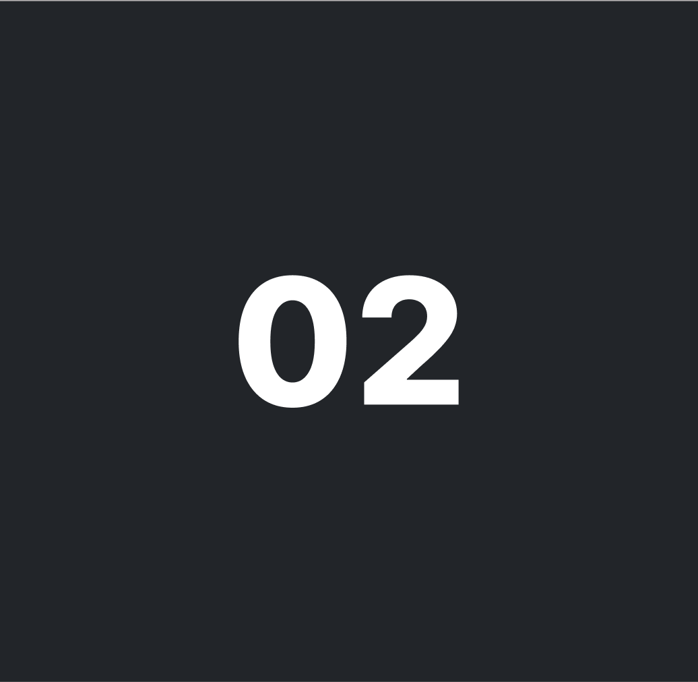
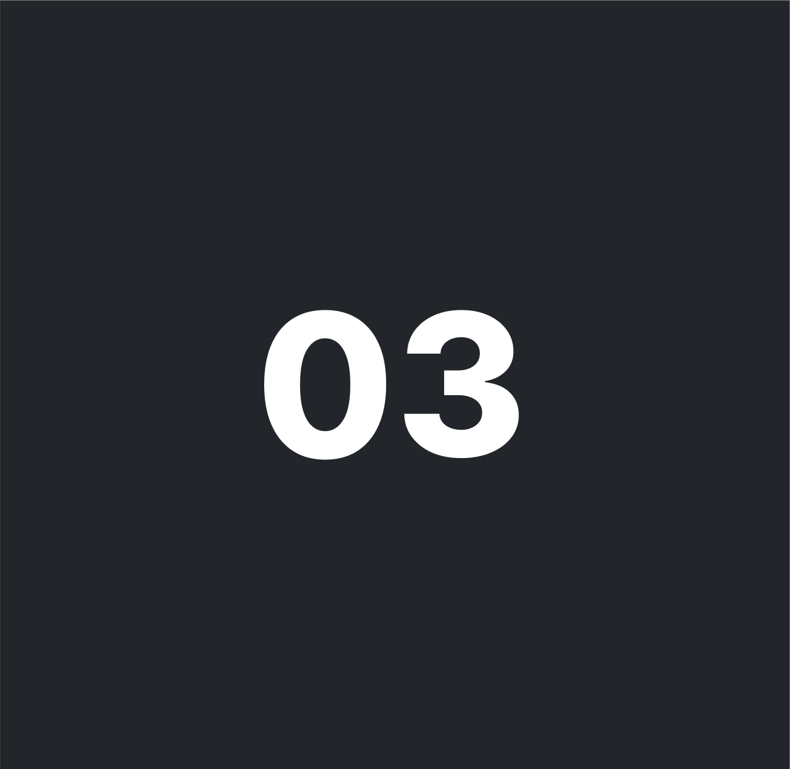
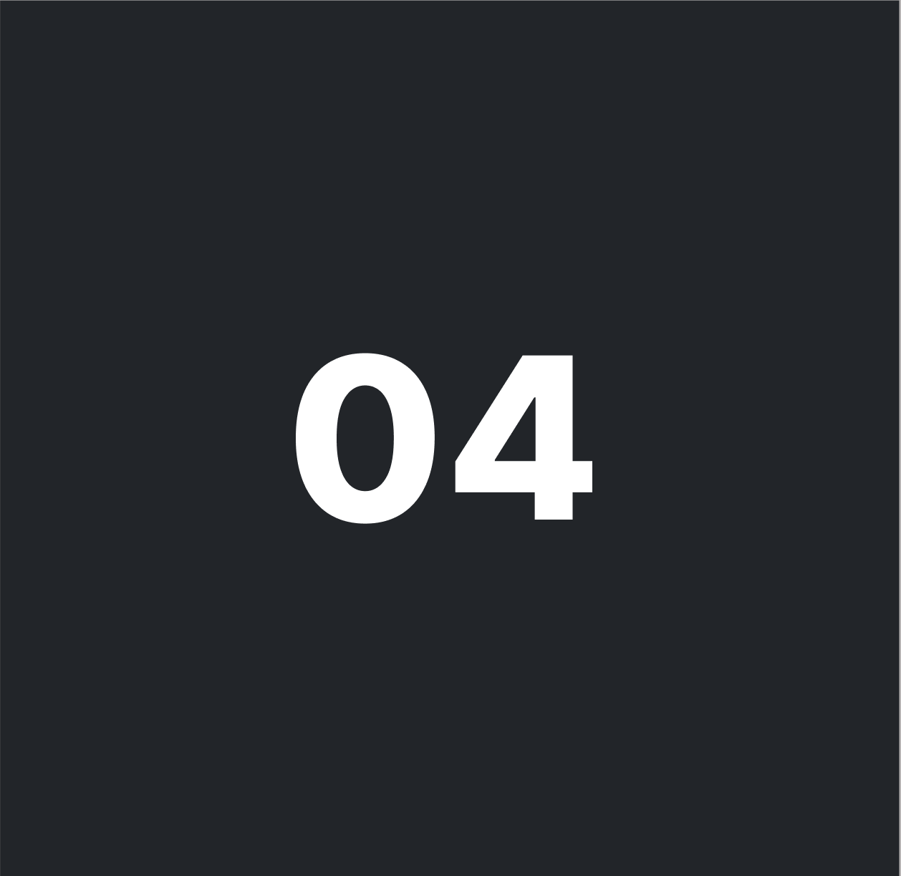
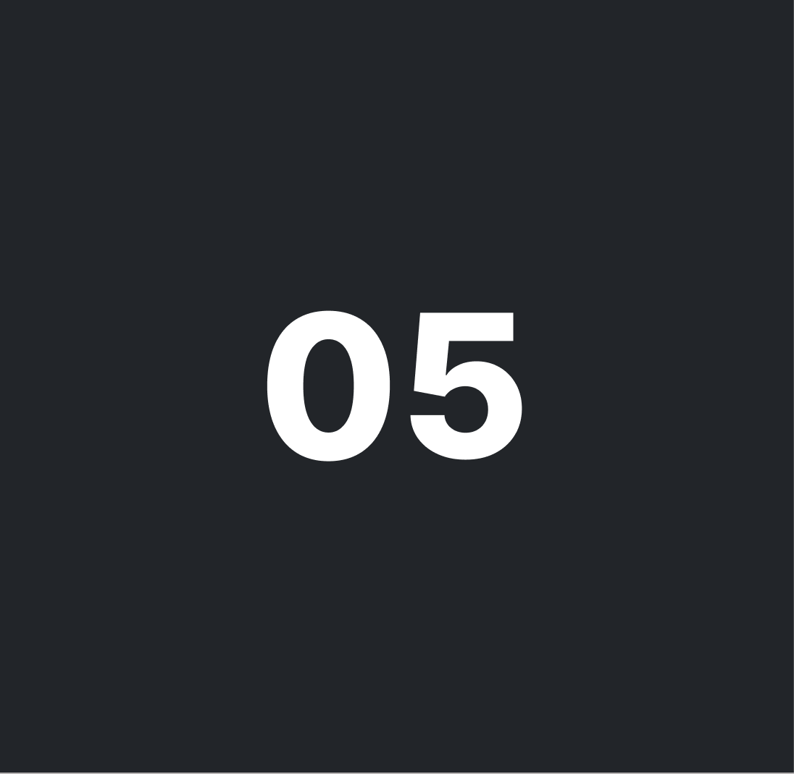

MIT ARBEJDE

Web
I tema 02 udviklede jeg mit første mobiloptimerede website, som også fungerede som studiestartsprøven...

UX/UI
I tema 03 arbejdede vi med at skabe vores eget emnesite, hvor vi både skulle designe og...

Animation
I tema 04 arbejdede vi med at designe og udvikle dele af et Emergency-Site ud fra en...

Indhold
I tema 05 lavede vi både et sandkassesite om et selvvalgt emne og et virksomhedssite, hvor...